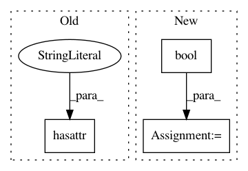

b62b48b0be060fe72bdb9d7893e8e23fd72e22bb,install_pynauty.py,,,#,10
Before Change
os.system("make pynauty")
// define if insidd virtual-env and install
if hasattr(sys, "real_prefix"):
os.system("make virtenv-ins")
else:
os.system("make tests")
After Change
parser = argparse.ArgumentParser(description="A program to install pynauty")
parser.add_argument("--venv", help="define if inside a virtual environment")
args = parser.parse_args()
venv = bool(args.venv)
// Define operating system
is_linux, is_windows = False, False
if platform.system() == "Linux":
In pattern: SUPERPATTERN
Frequency: 3
Non-data size: 3
Instances
Project Name: ysig/GraKeL
Commit Name: b62b48b0be060fe72bdb9d7893e8e23fd72e22bb
Time: 2017-12-20
Author: y.siglidis@gmail.com
File Name: install_pynauty.py
Class Name:
Method Name:
Project Name: pantsbuild/pants
Commit Name: 4be101000cb9179a9ee5edd1fc7e74af3a00348d
Time: 2020-02-15
Author: ericarellano@me.com
File Name: src/python/pants/rules/core/lint.py
Class Name: LintTarget
Method Name: is_lintable
Project Name: pymc-devs/pymc3
Commit Name: 39cd75d65aeca6b038f154bd8c151e1b38840766
Time: 2018-01-08
Author: aseyboldt@users.noreply.github.com
File Name: pymc3/sampling.py
Class Name:
Method Name: _iter_sample